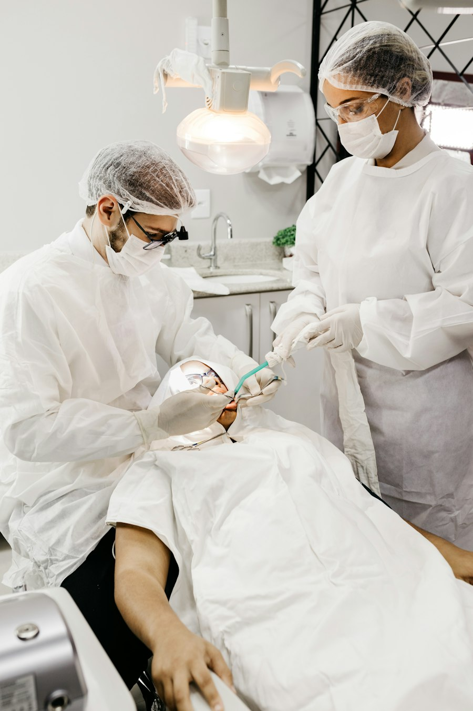
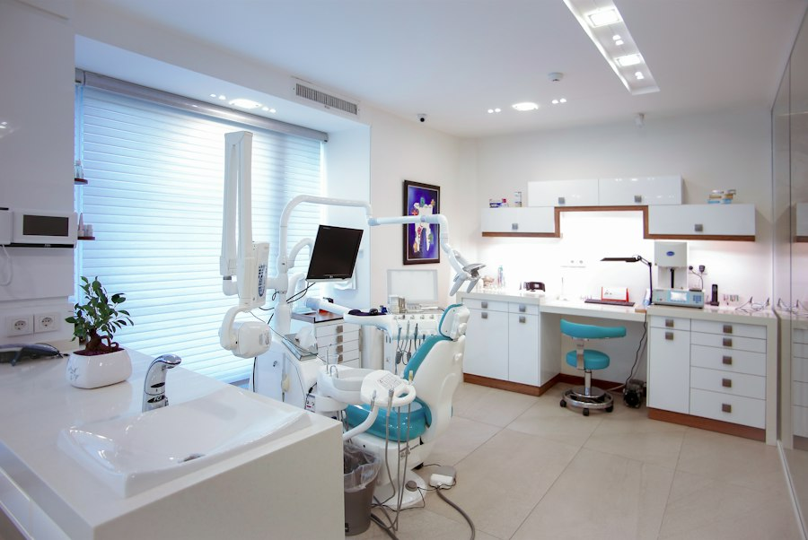

01Tish sug'urish
Xirurgik yondashuv, sifatli og'riqsizlantirish va tiklanish bo'yicha aniq tavsiyalar.
Xirurg stomatolog · 8 yillik tajriba
Tish sug'urish, davolash va protezlash — og'riqsiz, zamonaviy uskunalarda va har bir bemorga alohida e'tibor bilan.


Shifokor haqida
Dr. Xayot — IIV Stomatologiya poliklinikasida ishlovchi xirurg stomatolog. U tish sug'urish, davolash va protezlash bo'yicha sakkiz yillik amaliyotga ega.
Ijtimoiy tarmoqdagi sahifasida u gingivit, parodontit va tish kasalliklarining oldini olish haqida muntazam tushuntirib boradi — chunki to'g'ri ma'lumot, to'g'ri davolashning yarmi.
Xizmatlar

01Xirurgik yondashuv, sifatli og'riqsizlantirish va tiklanish bo'yicha aniq tavsiyalar.

02Kariyes va asoratlarni erta bosqichda aniqlash hamda tishni saqlab qolish.
 03
03
Yo'qolgan tishlarni tiklash — qulay, chiroyli va tabiiy ko'rinishda.
 04
04
Tosh va karashni olib tashlash, milk salomatligini saqlash.
Interaktiv tashxis
Tishdagi nuqtalarni bosing — eng ko'p uchraydigan holatlar va ularning belgilari bilan tanishing.
Emal yemirilishidan boshlanadi. Dastlab qora dog' yoki shirinlikka sezgirlik bo'lishi mumkin. Erta davolansa, tishni to'liq saqlab qolish oson.
Bu umumiy ma'lumot, tashxis emas. Aniq tashxis uchun shifokorga ko'rining.Jarayon
Qo'ng'iroq qiling yoki Telegram orqali yozing — qulay vaqtni birga tanlaymiz.
Holatni ko'rib chiqamiz, kerak bo'lsa rentgen qilamiz va muammoni tushuntirib beramiz.
Reja kelishilgach, qulay va og'riqsiz davolash boshlanadi.
Tiklanish va kundalik gigiena bo'yicha aniq tavsiyalar olasiz.


Savollar
Jarayon mahalliy og'riqsizlantirish ostida o'tadi, shuning uchun og'riq sezilmaydi. Shifokor har bir bosqichni oldindan tushuntiradi.
+998 99 840 14 48 raqamiga qo'ng'iroq qiling yoki Telegram orqali yozing. Telegramda tish bo'yicha bepul maslahat ham beriladi.
Odatda professional tozalash yiliga 1–2 marta tavsiya etiladi. Aniq muddatni shifokor holatingizga qarab aytadi.
Bu gingivit yoki parodontit belgisi bo'lishi mumkin. Bunday holda kechiktirmay shifokorga murojaat qilish kerak.
Qabul uchun yoziling
Ma'lumotlaringizni qoldiring — Telegram orqali shifokorga tayyor xabar yuboriladi.